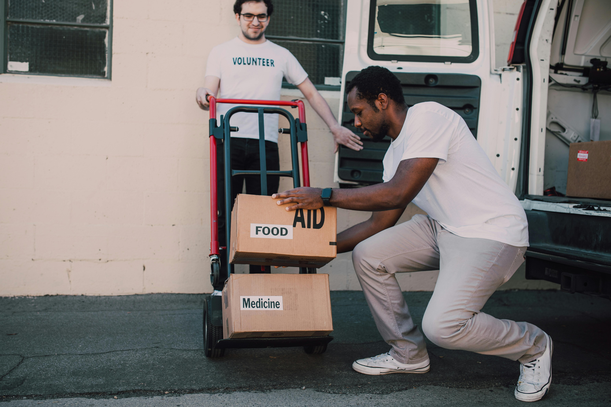
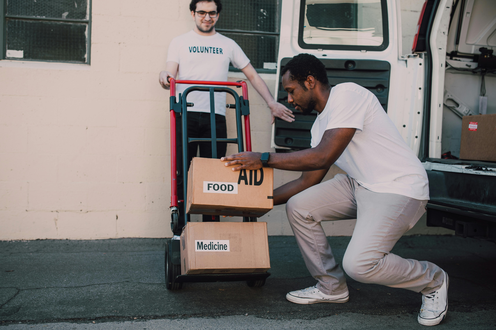

Bem-vindo(a) à Eco
É com imensa alegria que recebemos você em nossa página! Aqui na Eco, acreditamos que juntos podemos transformar vidas e construir um mundo mais justo e solidário. Nossa missão é apoiar comunidades carentes, oferecer recursos essenciais e promover ações que tragam esperança e dignidade para aqueles que mais precisam.
Nossa Missão
Na Eco, nossa missão é empoderar pequenos agricultores e promover práticas agrícolas sustentáveis que beneficiem tanto as comunidades locais quanto o meio ambiente. Acreditamos que a agricultura sustentável é a chave para um futuro mais saudável e equilibrado, onde todos podem prosperar.
Apoio à Agricultura Familiar
Na Eco, acreditamos
que a agricultura
familiar é
a base para um
desenvolvimento
rural sustentável
e inclusivo.
Reciclagem
O cuidado
com o
meio ambiente
é uma
de nossas
prioridades.
Ações Comunitárias
Fortalecer
o senso
de comunidade
é fundamental para
o sucesso de
qualquer iniciativa
social.